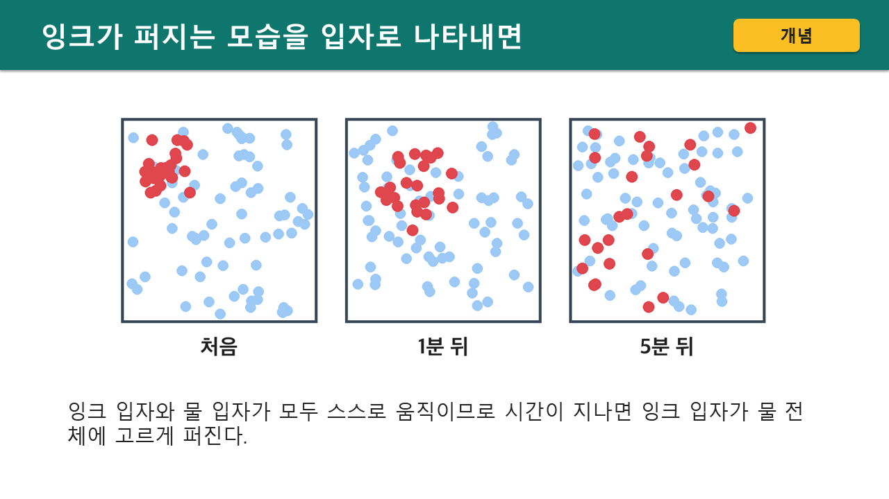
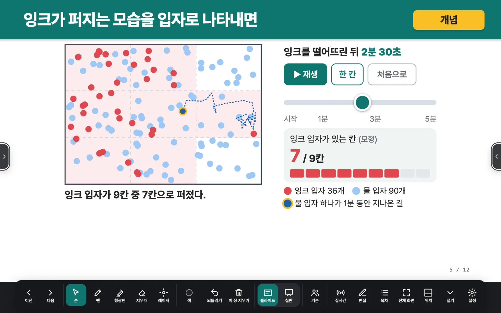

준비는 가볍게수업은 생생하게
평소 쓰던 AI와 수업 자료만 있으면 돼요. AI의 질문에 답하고 설계표를 확인하면 수업 파일이 나와요.
- 쓰던 AI 그대로
- PPT나 교과서 PDF
- 질문 몇 개에 답하기
- HTML 파일 하나
만드는 법
세 단계면 충분해요쓰던 AI로 수업 만들기
-
프롬프트 복사하기
아래 문장을 복사하세요. 쓰던 AI에게 공명 지침대로 수업을 만들어 달라는 부탁이에요.
https://github.com/N-lifescience/resonance 지침대로 이 자료를 수업 HTML로 바꿔줘지금까지 0번 복사됐어요
-
쓰던 AI에 수업 자료 올리고 문장 붙여 넣기
아래에서 쓰던 AI를 열어요. 대화창에 수업 자료를 올리고 복사한 문장을 붙여 넣어 보내세요. PPT뿐 아니라 교사용 교과서 PDF도 돼요. 로그인은 각자 계정으로 해 주세요.
-
질문에 답하고 HTML 생성하기
AI가 교과와 차시, 넣을 기능을 물어요. 답하고 설계표를 확인하면 HTML 파일이 생겨요. 내려받은 파일을 더블클릭하면 수업이 열려요.
바꾸기 전 · PPT 
그림 세 장을 넘기며 설명해요학생은 바라보기만 해요 바꾼 뒤 · 수업 HTML 
시간 막대를 밀면 입자가 퍼져요아래 툴바로 판서하고 넘겨요
모델별 비교
같은 자료를 건네면AI마다 어떻게 다를까요?
똑같은 PPT와 지침을 AI마다 한 번씩 건넸어요. 화면 구성과 학생 활동이 어떻게 다른지 견주어 보세요.
2026. 10. 18.(일) 23:59 기준
Gemini
비교 결과 준비 중
ChatGPT
비교 결과 준비 중
Claude
비교 결과 준비 중
- 엔진 적용
- 익스플로라그램
- 점검 오류
- 슬라이드
- 제작 시간